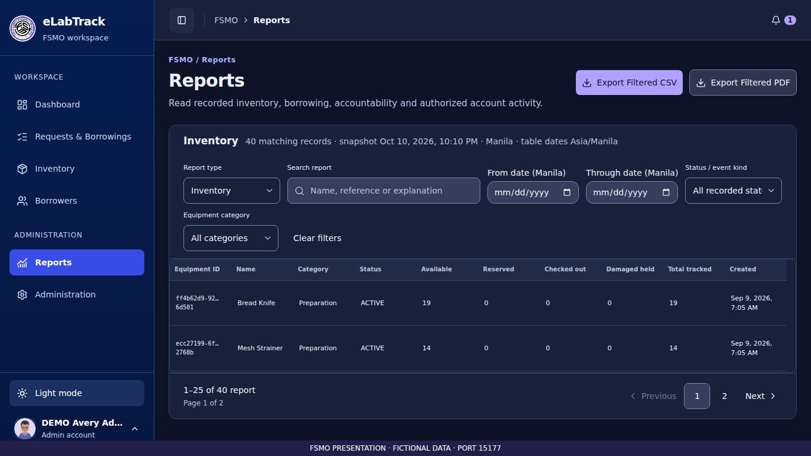
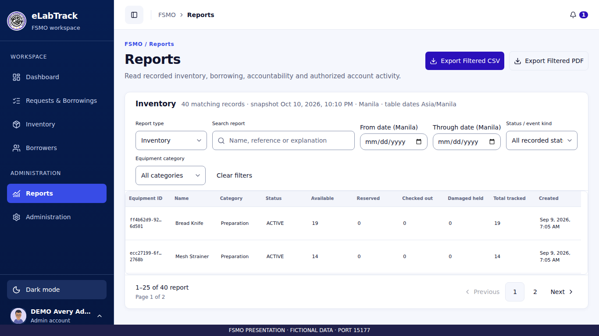
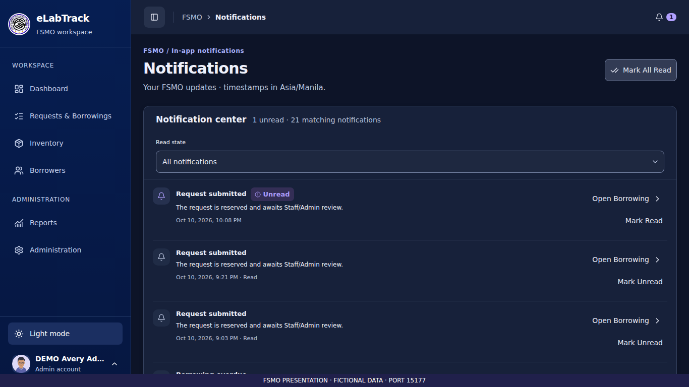
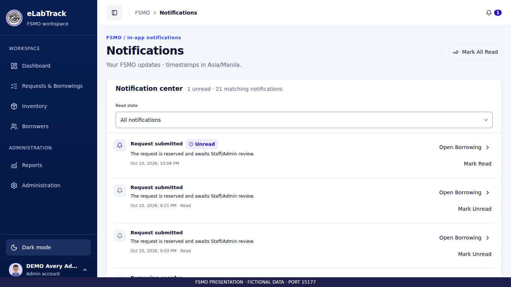
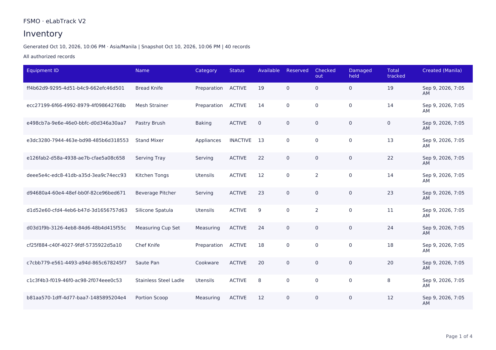
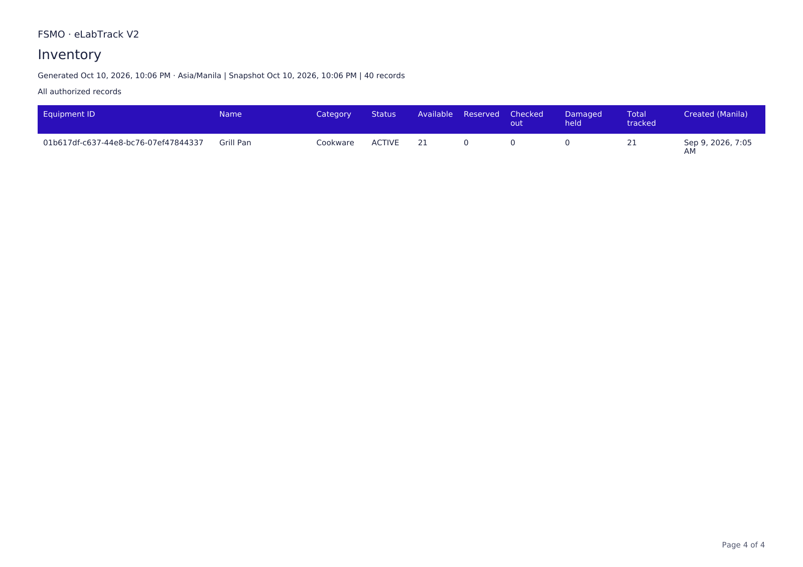

Final owner visual review passed on 2026-10-11. This is a curated publication subset. Full original capture collections remain locally; automated capture totals describe those complete runs.
Release audit · Exact retained and excluded paths





